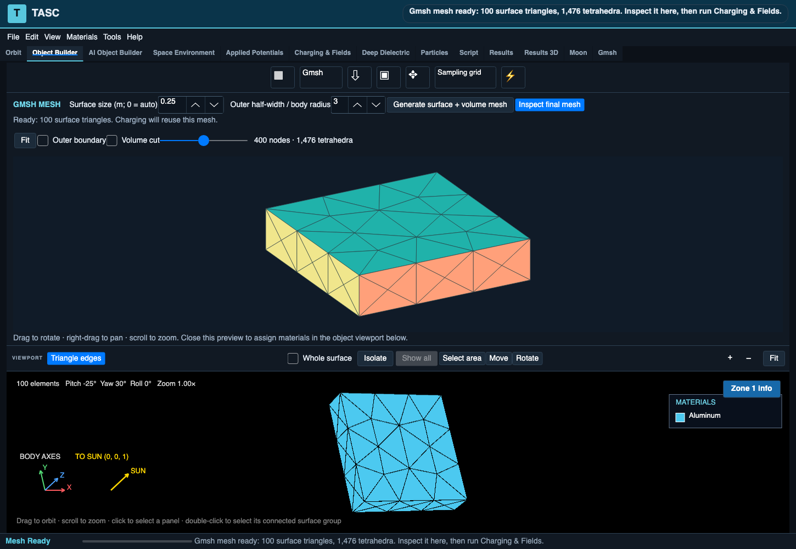

Build the physical model.
Create or import geometry, prepare charging surfaces, and assign materials and conductors. Keep source CAD distinct from the computational mesh.
GEOMETRY · MATERIALS · MESHINGWe develop TASC: a connected workflow for spacecraft
charging, electrostatic analysis, and engineering insight.
An illustrative two-charge model.
Switch the charges to explore the contours.
TASC is scientific desktop software for spacecraft charging and electrostatic analysis. It brings geometry, surface materials, electrical connections, environments, and numerical solvers into one engineering workflow.
Explore how a design charges, where differential potentials develop, and how material or electrical changes affect the result. Inspect the assumptions alongside the fields they produce.
Inside the TASC application

Explicit inputs. Inspectable results.
Create or import geometry, prepare charging surfaces, and assign materials and conductors. Keep source CAD distinct from the computational mesh.
GEOMETRY · MATERIALS · MESHINGInvestigate surface charging, electrostatic fields, and internal dielectric charging using the supported numerical methods for each problem.
CHARGING · POTENTIAL · FIELDSReview field maps, charging histories, and diagnostics. Compare configurations and retain the inputs and outputs needed to reproduce a run.
VISUALIZATION · COMPARISON · EXPORTTASC combines independent numerical methods with traceable material data. Each solver has a defined scope; verification focuses on the quantities that matter to the analysis.
Finite-element (MFEM) and boundary-element (BEM) methods support charging and field analysis. The documented MFEM charging path uses CPU Laplace electrostatics and analytic currents; volume plasma space charge, wakes, and plumes are outside that path’s current scope.
Transient internal-charging calculations connect deposited charge, electrostatics, and electrical leakage. This is a separate analysis from spacecraft surface charging, with its own physical inputs and assumptions.
A versioned material catalog retains sources and data status. Analytical checks, convergence studies, and independent solver comparisons provide development evidence. Suitability for a particular engineering decision requires validation of that case and configuration.
Equipotential Lab LLC develops TASC, drawing on experience in spacecraft charging, space plasma environments, and AI. Our development priorities include independent benchmarking, reproducible analysis, and model preparation that keeps the analyst in control.
TASC is an original, NASCAP-inspired implementation. It contains no NASCAP source code or executables. Ongoing development and benchmarking are distinct from mission qualification.
Explore TASC